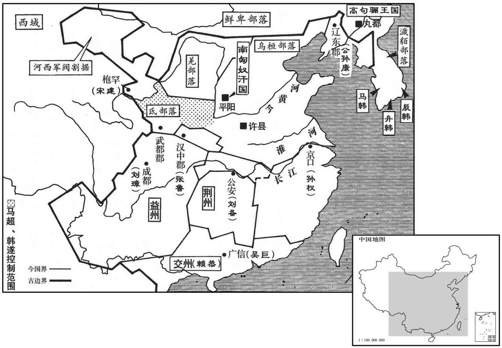

公元209年资治通鉴：本年记事、原文与白话对照
按原书编年位置阅读；追叙和史论不等于本年发生的事件。白话采用所据译本，缺译不以生成译文补齐。
卷66 · 本年记事
公元209年 · 汉孝献皇帝建安十四年
建安十四年〔（己丑、二○九）〕
上传原文的注释括号有异常，字符原样保留；无法可靠划分的段落默认全文显示。
本年事件索引（现代整理）

本年形势与背景参考图
春，三月，曹操军至谯。〔自赤壁还也。〕
春季，三月，曹操大军到达谯县。
孙权围合肥，久不下。权率轻骑欲身往突敌，长史张纮谏曰：「夫兵者凶器，战者危事也。〔兵凶器、战危事，前书错之言。〕今麾下持盛壮之气，忽强暴之虏，〔以权在军中，故称麾下。〕三军之众，莫不寒心。虽斩将搴旗，威震敌场，此乃偏将之任，非主之宜也。〔将，即亮翻。〕愿抑贲、育之男、〔贲、音奔。〕怀霸王之计。」权乃止。
孙权包围合肥，很久未能攻克。孙权率领轻骑准备亲自突击敌人，长史张劝阻说：“武器是不吉祥的器物，战争是很危险的事情。如今将军倚仗着锐气，轻视强大凶暴的敌人，使得三军上下，无不为您担心。即使能杀死敌将，俘获战旗，威震敌军，这不过是一个偏将的责任，不是主将所该作的事情。愿您抑制一下像孟贲、夏育那样的勇气，而胸怀争霸天下的王者谋略。”孙权才停止出击。
曹操遣将军张喜将兵解围，久而未至。扬州别驾楚国蒋济密白刺史，伪得喜书，云步骑四万已到雩娄，〔雩娄县，属庐江郡。师古曰：雩，音许于翻。娄，音力于翻。晋地道记，雩娄在安丰县西南。遣主簿迎喜。三部使赍书语城中守将：〔语，牛倨翻。〕「一部得入城，二部为权兵所得。」权信之，遽烧围走。〔考异曰：「十二月，权围合肥。」刘馥传云「攻围百余日」。孙权传云「踰月不能下」。由此言之，权退必在今年，明矣。〕
两版字句有差异，建议核对原文。
曹操派将张喜率军解救合肥，时间很长还未到。扬州别驾楚国人蒋济秘密向刺史建议：假装收到张喜的书信，声称四万步、骑兵已经到达雩娄，派主簿去迎接张喜。又三次派信使携带写有这一消息的书信去通知城中的守将。其中有一次到了城里，另外两次被孙权部下的兵士俘获。孙权相信了这个假情报，赶快烧毁围城的器械撤走。
秋，七月，曹操引水军自涡入淮，〔班志：淮阳扶沟县，涡水首受狼汤渠，东至向入淮；过郡三，行千里，水经注曰：至下邳睢陵县入淮。师古曰：涡，音戈，又音瓜。狼，音浪。汤，音徒浪翻。〕出肥水，军合肥，开芍陂屯田。〔水经注：肥水，出九江成德县广阳乡西，西北入芍陂。陂周一百二十许里，在寿春县南八十里，楚相孙叔敖所造也。自芍陂上施水，则至合肥。肥水又北过寿春县北，入于淮。师古曰：芍，音鹊。〕
秋季，七月，曹操统率水军自涡水进入淮河，在肥水登岸，驻屯合肥，重新修整芍陂的水利设施，在周围地区屯田。
冬，十月，荆州地震。
冬季，十月，荆州地区发生地震。
十二月，操军还谯。
十二月，曹操的军队返回谯县。
庐江人陈兰、梅成据灊、六叛、〔灊、六二县、皆属庐江郡。贤曰：灊，今寿州霍山县。灊，音潜。操遣荡寇将军张辽讨斩之；〔荡，徒朗翻。考异曰：辽传无年。按繁钦征天山赋云「建安十四年十二月甲辰，丞相武平侯曹公东征，临川未济，群舒蠢动，割有灊、六，乃俾上将荡寇将军张辽治兵南岳之阳。」又云：「陟天柱而南徂。」故置于此。〕因使辽与乐进、李典等将七千余人屯合肥。
两版字句有差异，建议核对原文。
庐江人陈兰、梅成占据县、六安进行叛乱，曹操派荡寇将军张辽讨伐，斩杀陈兰、梅成等。曹操即命张辽与乐进、李典等率七千余人屯驻合肥。
周瑜政曹仁岁余，所杀伤甚众，仁委城走。权以瑜领南郡太守，屯据江陵；〔守式又翻。程普领江夏太守，治沙羡；〔夏，户雅翻。羡，音夷。〕吕范领彭泽太守；〔范传云：范领彭泽太守，以彭泽、柴桑、历阳为奉邑。〕吕蒙领寻阳令。刘备表权行车骑将军，领徐州牧。会刘琦卒，权以备领荆州牧，周瑜分南岸地以给备。〔荆江之南岸，则零陵、桂阳、武陵、长沙四郡地也。〕备立营于油口，改名公安。〔水经：南平郡孱陵县有油水，西北注于江，曰油口。刘备立营之处也。
两版字句有差异，建议核对原文。
周瑜率军围攻曹仁一年有余，杀伤曹军甚多，曹仁弃城撤走。孙权任命周瑜兼任南郡太守，屯驻江陵；程普兼任江夏太守，设郡府在沙羡；吕范兼任彭泽太守；吕蒙兼任寻阳县令。刘备向朝廷上表，推荐孙权代理车骑将军，兼任徐州牧。正在这时，刘琦去世，孙权让刘备兼任荆州牧，周瑜将荆州长江以南的地区分给刘备。刘备将军营设在油口，并把那里改名为公安。
权以妹妻备。〔妻，七细翻。〕妹才捷刚猛，有诸兄风，侍婢百余人，皆执刀侍立，备每入，心常凛凛。〔恐为所图也。〕
孙权把妹妹嫁给刘备。孙权的妹妹才思敏捷，性情刚猛，有她兄长们的风度。她的侍婢一百余人，都手执利刀在旁站着侍候。刘备每次进入内宅，心都很恐惧。
曹操密遣九江蒋干往说周瑜。〔说，输芮翻；下同。〕干以才辨独步于江、淮之间，〔言江、淮人士，无能敌其才辩者。〕乃布衣葛巾，自托私行诣瑜。瑜出迎之，立谓干曰：「子翼良苦，远涉江湖，〔蒋干，字子翼。〕为曹氏作说客邪！」〔为，于伪翻。〕因延干，与周观营中，行视仓库、军资、器仗讫，还饮宴，示之侍者服饰珍玩之物。因谓干曰：「丈夫处世，〔处，昌吕翻；下同。〕遇知己之主，外托君臣之义，内结骨肉之恩，言行计从，祸福共之，假使苏、张更生，〔谓苏秦、张仪也。〕能移其意乎！」干但笑，终无所言。还白操，称瑜雅量高致，非言辞所能间也。〔间，古苋翻。〕
曹操秘密派遣九江人蒋干去游说周瑜。蒋干以才能、机辩闻名于长江、淮河之间，没有人能胜过他。蒋干换上平民穿的布衣，戴上葛布制成的头巾。自称因私人交谊来看望周瑜。周瑜出来迎接他，站着对他说：“蒋子翼，你真是很辛苦，涉水远道而来，是为曹操作说客吗！”遂邀请蒋干进来，与他一同参观军营，巡视仓库、军用物资与武器装备之后。回来设宴款待蒋干，洒席间让蒋干看自己的侍女、服装、饰物以及各种珍贵的宝物，并对他说：“大丈夫生活在世上，遇到知已的君主，外表上有君臣关系，内心却情同骨肉，言听计从，有福共享，有难同当，即使苏秦、张仪重生，能转移他的心意吗！”蒋干只是笑，一直不谈私人关系之外的话。他回来向曹操汇报，称颂周瑜胸襟宽广，志向远大，不是言语所能挑拔离间的。
丞相掾和洽言于曹操曰：「天下之人，材德各殊，不可以一节取也。俭素过中，自以处身则可，以此格物，所失或多。〔格，正也。掾，俞绢翻。〕今朝廷之议，吏有着新衣、〔着，陟略翻。〕乘好车者，谓之不清；形容不饰、衣裘敝坏者，谓之廉洁。至令士大夫故污辱其衣，藏其舆服；朝府大吏，或自挈壶飧以入官寺。〔朝，直遥翻。飧，苏昆翻，熟食曰飧。〕夫立教观俗，贵处中庸，为可继也。〔中者，正道；庸者，常道。程子曰不偏之谓中，不易之谓庸。〕今崇一概难堪之行以检殊涂，〔检，束也，检柙也。概，与僙同。行，下孟翻；下同。〕勉而为之，必有疲瘁。〔瘁，秦醉翻。〕古之大教，务在通人情而已；凡激诡之行，则容隐伪矣。」操善之。
丞相掾和洽向曹操提出建议说：“天下的人，才干和品德各不相同，不能只用一个标准来选拔人才。以过分的节俭朴素来约束自己是可以的，但用这标准来限制别人，或许就会出现许多失误。如今朝廷上的舆论是官吏中穿新衣服，乘好车的人，就被称为不清廉；而不修饰仪表，穿破旧衣服的人，则被赞为廉洁。致使士大夫故意弄脏自己的衣裳，收藏起车子、服饰。朝廷各部门的高级官员，有的还自己携着饭罐，到官府上班。树立榜样以供人仿效，最好采用中庸之道，这样才能坚持下去。如今一概提倡这些使人难以忍受的行为，用它来约束各阶层的人士，勉强施行，必然会疲惫不堪。古人的教化，只是务求通达人情；凡是偏激怪异的行为，则会包藏虚伪。”曹操认为他的见解很好。